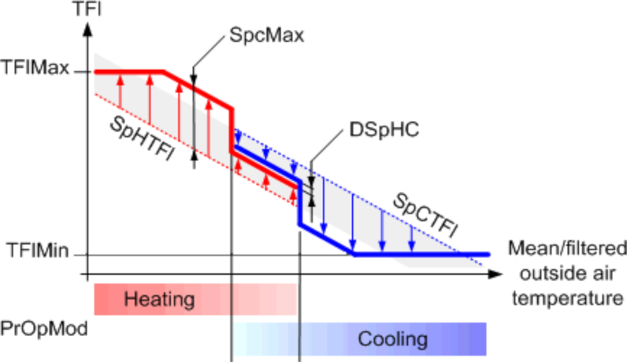
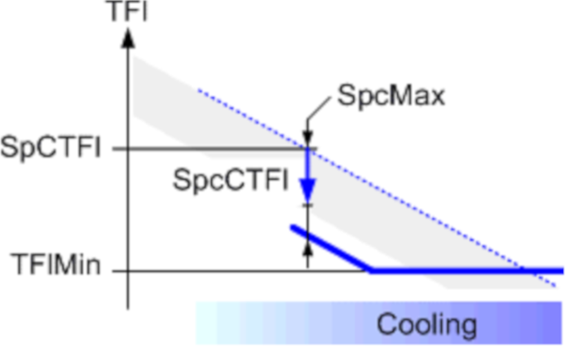

[PWM_CTL] 脉宽调制控制
功能块 PWM_CTL 允许循环泵循环运行。
PWM_CTL 允许循环泵循环运行，用于缓慢加热和冷却排放系统，例如热活性系统（TABS）。当前的加热或冷却需求由净化决定。循环运行持续1-24小时。在 24 小时循环运行中，可以指定一天中任何时间的泵开启时间。与连续运行相比，循环用于将所需的加热或冷却能量更快地引入加热或冷却排放系统，但温度较低或较高。
PWM_CTL 计算加热或冷却循环的流量温度设定点修正，并相应地控制循环泵。运行周期的持续时间可在1-24小时范围内设置。对于 24 小时循环，可以在块配置中指定泵的开启时间。
PWM_CTL 提供当前工作模式[PrOpMod]，计算出的设定值修正[SpcHTFl] 和 [SpcCTFl]，以及命令 [ 的值Cmd] 并清除 [Prg].
Present operating mode [PrOpMod]
[PrOpMod] 在每个周期开始时根据输入 [ 处的值进行计算EnH] 和 [EnC]。如果 [EnH] 和 [EnC] 在一个正在进行的周期中发生变化，它们的新值将在下一个周期开始时考虑。
[EnH]（加热） | [EnC]（冷却） | [PrOpMod] | |
|---|---|---|---|
是的 | No | 加热（加热循环） | |
是的 | 是的 | 加热/cooling（加热/cooling 循环） | |
No | 是的 | 冷却（冷却循环） | |
No | No | 关闭（无周期） | |

如果 [EnH] 或者 [EnC] 在一个周期内发生变化，则在下一个周期内考虑该变化。
Calculating setpoint corrections
PWM_CTL 计算给定流量温度设定点的修正值 [SpHTFl] 和 [SpcTFl]。随着流动温度的升高或降低，加热或冷却能量会更快地引入加热或冷却系统。
PWM_CTL 不提供新的流量温度设定值，仅提供设定值修正[SpcHTFl] 和 [SpcCTFl].

设定点修正的计算是基于[PrOpMod].
[PrOpMod] = Heating
在加热操作中，以较高的流动温度设定值供应能量。加热设定点的修正在输出端提供[SpcHTFl].
设定点修正受到以下因素的限制：
[SpcHTFl] <= [SpcMax]
[SpcHTFl] <= [TFlMax] - [SpHTFl]

Key
TFlMax | 最高流动温度 |
SpHTFl | 加热的流量温度设定值 |
SpcMax | 最大设定值修正 |
SpcHTFl | 加热设定值修正 |
[PrOpMod] = Heating/Cooling
在加热/cooling 操作中，未定义是否必须提供或释放能量。在这种情况下，给定的流量温度设定点范围[SpHTFl]...[SpcTFl] 缩小为 [DSpHC]（中立区）。加热和冷却设定点的修正在输出处提供[SpcHTFl] 和 [SpcCTFl].

Key
SpcTFl | 用于冷却的流量温度设定值 |
SpHTFl | 加热的流量温度设定值 |
DSpHC | Delta 流量设定值heat/cool.（中立区） |
SpcCTFl | 冷却设定值修正 |
SpcHTFl | 加热设定值修正 |
[PrOpMod] = Cooling
在冷却操作中，能量通过较低的流动温度设定点排出。冷却设定点的修正在 [SpcCTFl] 输出。
设定点修正受到以下因素的限制：
[SpcCTFl] <= [SpcMax]
[SpcCTFl] <= [SpcCTFl] - [TFlMin]

Key
SpcTFl | 用于冷却的流量温度设定值 |
TFlMin | 最低流动温度 |
SpcMax | 最大设定值修正 |
SpcCTFl | 冷却设定值修正 |
[PrOpMod] = Off
无操作： PWM_CTL 既不控制也不启用循环泵（[Cmd] = 0 和 [Prg] = 0).
[PrOpMod] = Transient
禁用功能：由于功能块被禁用或流量温度测量报告为无效或未提供相应操作模式的 PWM 配置，因此不执行计算（[Cmd] = 1 和 [Prg] = 0).
Operation steps
在给定的操作模式内，功能块循环执行控制。每个周期包含以下步骤。
1 | 该循环从吹扫开始（加热和冷却阀门关闭）。 如果 [TiPrgMin] = 0 | |
2 | 最小净化后[TiPrgMin]，流动温度[TFl] 进行了分析。根据流温度值，执行以下操作之一：
| |
[TFl] < [SpHTFl] | 如果 [TFl] 在 [ 之外SpHTFl] 和 [SpcTFl]（连续运行期间超出流动温度设定点范围），停止吹扫并启用加热或冷却（示例 1）。 | |
[TFl] < [SpHTFl] | 如果 [TFl] 介于 [SpHTFl] 和 [SpcTFl]（在连续运行期间的流动温度设定点范围内），吹扫会延长直至需要加热或冷却（示例 2），或直到吹扫完成（简单吹扫阶段）。 | |
特例 | Heating/cooling: | |
3 | 在相对接通时间[的持续时间内，在 PWM_CTL 的输出处提供设定点修正TiOnEst]。如果在此期间未满足关闭标准，则开启阶段将继续（示例 3）。如果满足关断标准，则接通阶段完成，并且在周期结束之前不进行进一步的改变。 | |
特殊情况 | 如果循环泵的最小关闭时间[TiOffMin] 不能保证所需的加热，加热在整个周期中持续进行。这同样适用于冷却。 | |
如果最短关断时间[TiOffMin] 不能在操作周期内得到保证，接通阶段将持续到周期结束。 如果计算出的设定值修正导致开启时间低于循环泵的最小开启时间[TiOnMin]，最小接通时间用作接通时间，但减少了设定值修正。 | ||
Example for heating cycles 
Example 1
时间段[TiPrdH] 总是从 purge [ 开始Prg]。最短吹扫时间结束后 [TiPrgMin]，流动温度[TFl] 的测量值低于连续模式下加热的测量值 [SpHTFl]。供暖[Cmd] 带设定点修正 [SpcHTFl] 开始。当满足 PWM_CTL 的关闭标准时，加热结束。直到下一个周期为止都没有变化。
Example 2
时间段[TiPrdH] 总是从 purge [ 开始Prg]。最短吹扫时间结束后 [TiPrgMin]，流动温度[TFl] 是在连续模式下加热时测量的 [SpHTFl]。吹扫时间延长直至流动温度低于 [SpHTFl]。供暖[Cmd] 带设定点修正 [SpcHTFl] 开始。当满足 PWM_CTL 的关闭标准时，加热结束。直到下一个周期为止都没有变化。
Example 3
时间段[TiPrdH] 总是从 purge [ 开始Prg]。最短吹扫时间结束后 [TiPrgMin]，流动温度[TFl] 的测量值低于连续模式下加热的测量值 [SpHTFl]。供暖[Cmd] 带设定点修正 [SpcHTFl] 开始。加热时，循环加热的水流温度[SpHTFl] + [SpcHTFl] 未达到。持续加热直至满足该功能的关闭标准。直到下一个周期为止都没有变化。
输入 | 描述 | 数据类型 | 默认值 |
|---|---|---|---|
|
SpHTFl | Flow temperature setpoint for heating 加热流量温度设定值（连续运行） | 真实的 | 20 [°C] 0.0…130.0 [°C] |
|
SpCTFl | Flow temperature setpoint for cooling 冷却水流温度设定值（连续运行） | 真实的 | 20 [°C] 0.0…130.0 [°C] |
SpRH | Room setpoint for heating | 真实的 | 22.0 [°C] 5.0...40.0 [°C] |
SpRC | Room setpoint for cooling | 真实的 | 26 [°C] 5.0...40.0 [°C] |
|
EnH | Enable heating 当前运营周期完成后才会考虑变更。 | 布尔值 | 1 |
0 - 加热已禁用。 | |||
|
EnC | Enable cooling 当前运营周期完成后才会考虑变更。 | 布尔值 | 1 |
0 - 冷却被禁用。 | |||
|
TFl | Flow temperature 该功能块需要[TFl] 计算当前的加热或冷却能量传输，并在不需要时延迟开启阶段。 | 真实的 | 20.0 [°C] 0.0...130.0 [°C] |
|
ErTFl | Enable function 指示水流温度是否有故障。 | 布尔值 | 0 |
0 – 流量温度没有故障。 | |||
TFlMax | Maximum flow temperature 最大流量温度限制设定点修正[SpcHTFl] 避免超过加热的最高流动温度。 [SpHTFl] + [SpcHTFl] <= [TFlMax]. | 真实的 | 95.0 [°C] 0.0...130.0 [°C] [°C] |
TFlMin | Minimum flow temperature 最低流量温度限制设定点修正[SpcCTFl] 以避免低于冷却所需的最低流动温度。 [SpcTFl] - [SpcCTFl] >= [TFlMin]. | 真实的 | 0.0 [°C] 0.0...130.0 [°C] |
|
TiPrdH | Time period for heating 确定加热周期长度。 | 时间 | 4h 0...24h |
|
TiPrdC | Time period for cooling 确定冷却周期长度。 | 时间 | 4h 0...24h |
|
TiPrdHC | Time period for heating or cooling 确定加热或冷却的周期长度。 | 时间 | 4h 0...24h |
|
TiPrgMin | Minimum purge time 能够测量可靠的流量温度值的泵的最短吹扫开启时间[TFl]. | 时间 | 30m |
|
TiOnMin | Minimum switch-on time 加热或冷却循环中泵的最短开启时间。 | 时间 | 1m |
|
TiOffMin | Min.switch-off time 加热或冷却循环中泵的最短关闭时间。如果不能保证最短关闭时间，则继续当前操作 | 时间 | 0s |
|
SpcMax | Maximum flow temperature setpoint correction 加热或冷却循环期间流量温度的最大设定点修正 | 真实的 | 1.5 [K] 0.0...10.0 [K] |
DSpHC | Delta flow temperature setpoint for heating or cooling operation 加热中性区/cooling. 当加热和冷却同时启用时，该模块会计算一个用于加热的水流温度设定点和一个用于冷却的水流温度设定点。两个设定点必须遵守最小温差。这避免了在加热和冷却之间摇摆。 | 真实的 | 0.1 [K] 0.0...10.0 [K] |
|
RthRatio | Thermal resistance ratio 流向热缓冲供应系统的热阻与流向房间的热阻之间的热阻值。 | 真实的 | 40.0 [%] |
|
Prd24Mod | Mode for 24 hours period 先决条件：[TiPrdH] 或者 [TiPrdC] 或者 [TiPrdHC] = 24 小时。 | 布尔值 | 1 |
0 – 激活白天时间 [CntrTiOn] 作为每日周期的时间中位数。 1 – 激活白天时间 [SttTiOn] 作为每日周期的起始值。 | |||
|
SttTiOn | Start switch-on time 定义每日周期的开始时间。 | 时间 | 22小时_0分钟 |
|
CntrTiOn | Center switch-on time 白天作为每日周期的中位数。 | 时间 | 04h_00m 00h_00m…24h_00m |
输出 | 描述 | 数据类型 | 默认值 |
|---|---|---|---|
|
PrOpMod | Present operating mode | 整数 | 2: Off 1...5 |
1: Transient | |||
|
Cmd | Command | 布尔值 | 1 |
0 - 不允许加热/冷却。 | |||
|
Prg | Purge | 布尔值 | 0 |
0 - 不允许清除功能。 | |||
|
SpcHTFl | Setpoint correction flow temperature for heating | 真实的 | 0.0 [K] |
|
SpcCTFl | Setpoint correction flow temperature for cooling | 真实的 | 0.0 [K] |
|
SpCTFl | Flow temperature setpoint for cooling 冷却水流温度设定值（连续运行） | 真实的 | 20 [°C] 0.0…130.0 [°C] |
|
TiOnEst | Estimated relative switch-on time 计算出的再循环泵的开启时间 [Cmd] 在循环时间的 % 中。该值适用于当前设置并假设 [TFl] 完全对应于设定点 ([SpHTFl] + [SpcHTFl] 或者 [SpCTFl] - [SpcCTFl]）在整个开启阶段。该值仅用于当前操作的信息。 | 真实的 | 0.0 [%] |
ErrCode | Error code indication | 整数 | 0: No error |
= 0 - No error | |||
EnFnct | Enable function 启用该功能。 | 布尔值 | 1 |
0 - 该功能被禁用。 | |||
|
SysUnits | System of units 表示system of units由块使用。 | 整数 | 1: International system of units (SI) (fallback) 1...5 |
1: International system of units (SI) (fallback) | |||
Time period configuration
时间段配置的值 0（[TiPrdH], [TiPrdC], [TiPrdHC]) 可用于禁用相应的操作模式。如果 [EnH] 和 [EnC] 请求此类禁用操作模式，PWM_CTL 将输出设置为以下值：
- [PrOpMod] = Transient
- [Cmd] = 1
- [Prg] = 0
- [SpcHTFl] = 0.0
- [SpcCTFl] = 0.0
- [TiOnEst] = 0.0
大于0的时间段配置限制在范围：1h...24h。
当时间段配置为值 24h 时，输入处的值 [Prd24Mod], [SttTiOn], [CntrTiOn] 可用于配置相应周期的开始时间（作为一天中的时间）。
Thermal resistance ratio [RthRatio]
[RthRatio] 表示两个热阻之间的比率：
- Thermal resistance from flow media to heat buffer of heat emission or absorption system
- Thermal resistance of flow media to room air
对于集成 TABS（混凝土核心激活），以下参数具有决定性作用：
- Pipe configuration (pipe distance TABS register)
- Water volume flow in the pipes of the TABS registers
- Structure of floor and ceiling construction
以下阻力比适用于混凝土核心活化：
管道距离 | 水体积流量 | 地板: 地毯, | 地板: 地毯, | 楼层：高架楼层的地板下空间， |
|---|---|---|---|---|
15 cm | 高：15公斤/（平方米·小时） | 30 | 26 | 21 |
中位数：12公斤/（平方米·小时） | 33 | 29 | 24 | |
低：7.5公斤/（平方米·小时） | 41 | 36 | 30 | |
20 cm | 高：15公斤/（平方米·小时） | 40 | 35 | 29 |
12公斤/(平方米·小时) | 42 | 37 | 31 | |
低：7.5公斤/（平方米·小时） | 48 | 43 | 36 | |
25 cm | 高：15公斤/（平方米·小时） | 48 | 43 | 36 |
12公斤/(平方米·小时) | 50 | 44 | 38 | |
低：7.5公斤/（平方米·小时） | 54 | 49 | 42 |
较低的电阻比，例如[RthRatio] < 35%，通常会导致周期中较短的接通阶段，较长的接通阶段中的高电阻比。
Example
窄管道配置（15 cm）和高水流量（15 kg/（m2·h））对散热的热阻较低。地毯和空白天花板的热阻往往较小。总之，这导致[RthRatio] = 30%.
Maximum setpoint correction [SpcMax]
在加热或冷却循环中，[SpcMax] 强烈影响循环比 [TiOnEst]. [SpcMax] 一方面必须尽可能低，以避免循环和连续运行之间的流动温度设定值存在较大差异。另一方面， [SpcMax] 必须选择尽可能高的值，以实现循环泵的短启动时间。对于 TABS，指导值在 1 到 3 K 之间。
Special case
非常高的[SpcMax] 可以选择，例如 10 K，用于仅使用冷却塔操作进行冷却，以充分利用最大冷却潜力（高达并包括 [TFlMin]).
Delta flow setpoint heating/cooling
在加热或冷却循环中，流动温度设定点带[DSpHC]（加热中性区/cooling）必须尽可能小，以实现较短的开启时间。然而， [DSpHC] 不能太小，以避免不必要的加热和冷却之间的转换。对于 TABS，指导值在 0.1 到 1.0 K 之间。
Minimum purge time
最小吹扫时间根据水循环周期来选择，例如长于一个完整的水循环。